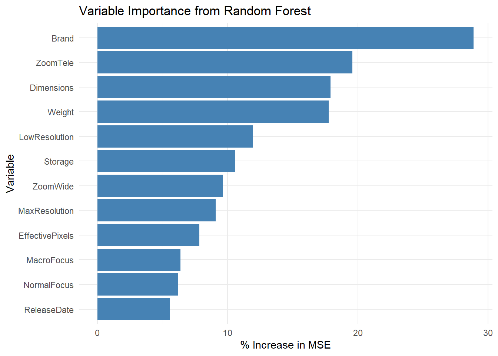
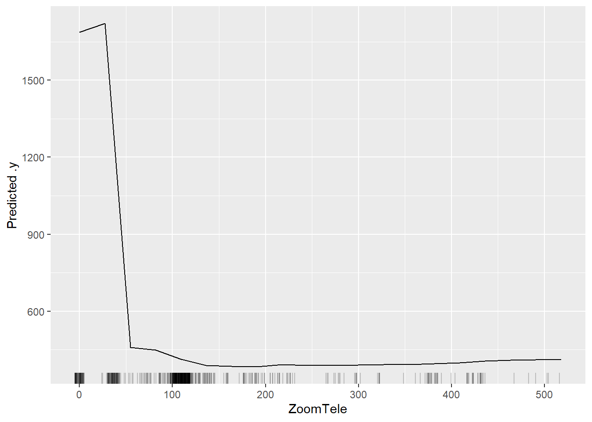
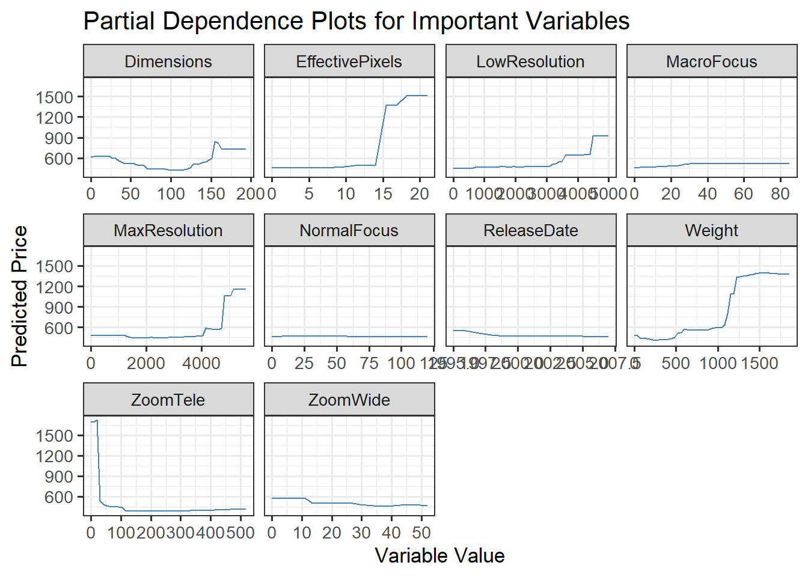
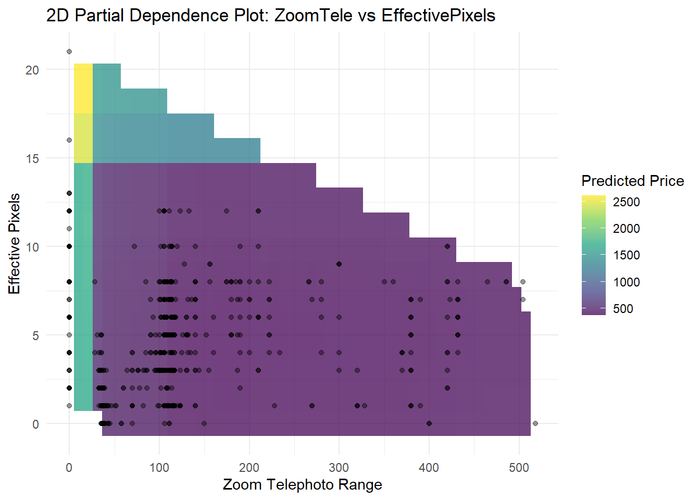
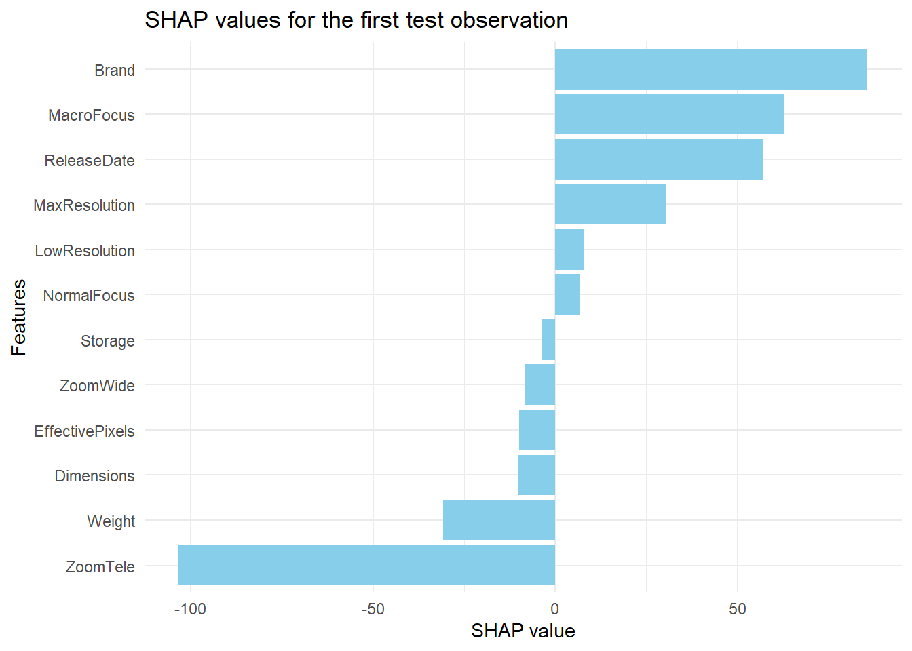
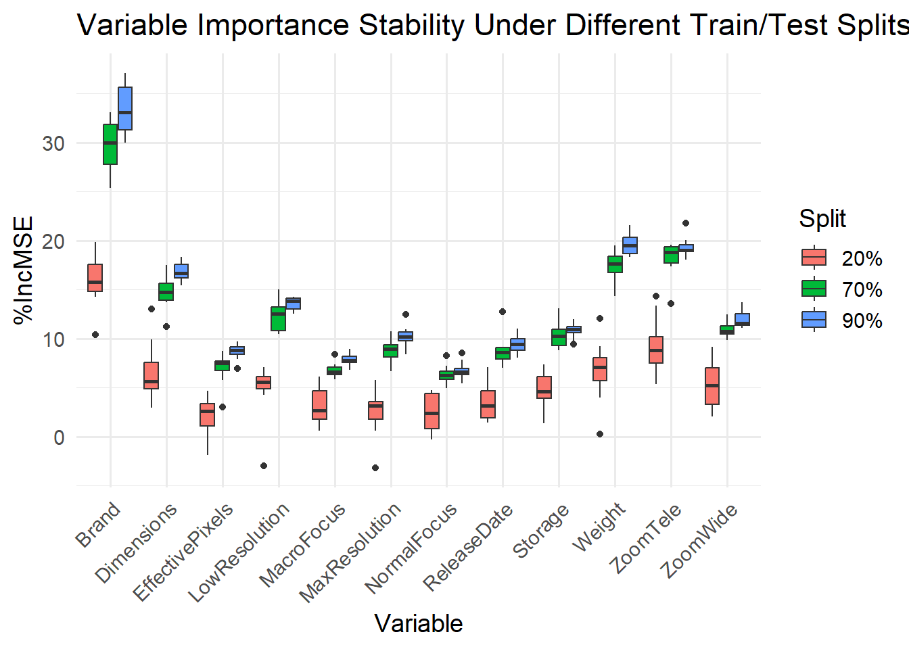
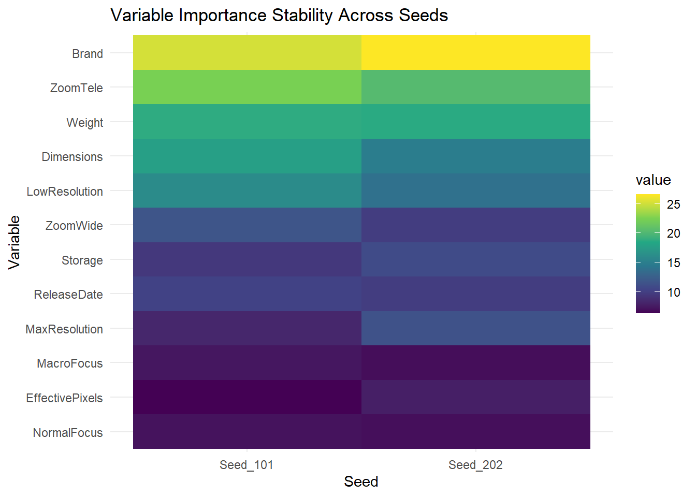
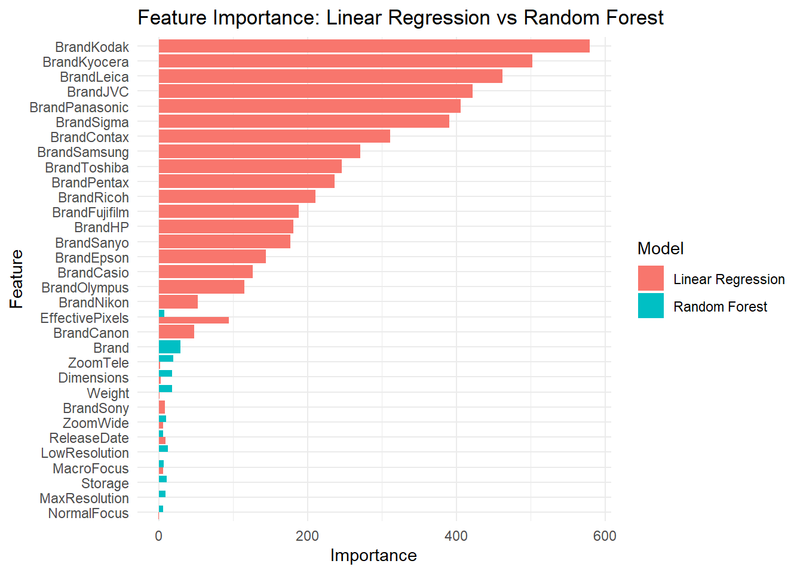

###load the dataset Load the data frame we just cleaned in the last section.
library(dplyr)
载入程序包：'dplyr'
The following objects are masked from 'package:stats': filter, lag
The following objects are masked from 'package:base': intersect, setdiff, setequal, union
library(tidyr) library(ggplot2) library(randomForest)
randomForest 4.7-1.2
Type rfNews() to see new features/changes/bug fixes.
载入程序包：'randomForest'
The following object is masked from 'package:ggplot2': margin
The following object is masked from 'package:dplyr': combine
library(pdp) library(vip)
载入程序包：'vip'
The following object is masked from 'package:utils': vi
library(DALEX)
Welcome to DALEX (version: 2.4.3). Find examples and detailed introduction at: http://ema.drwhy.ai/
载入程序包：'DALEX'
The following object is masked from 'package:vip': titanic
The following object is masked from 'package:dplyr': explain
library(iml) library(purrr)
载入程序包：'purrr'
The following object is masked from 'package:pdp': partial
library(forcats) library(reshape2)
载入程序包：'reshape2'
The following object is masked from 'package:tidyr': smiths
library(fastshap)
载入程序包：'fastshap'
The following objects are masked from 'package:DALEX': explain, titanic
The following object is masked from 'package:vip': gen_friedman
camera_data_filled <- readRDS("camera_data_clean.rds") colnames(camera_data_filled)
[1] "Model" "ReleaseDate" "MaxResolution" "LowResolution" [5] "EffectivePixels" "ZoomWide" "ZoomTele" "NormalFocus" [9] "MacroFocus" "Storage" "Weight" "Dimensions" [13] "Price" "Brand"
Using Random Forest to find out the feature importance and graph it.
library(randomForest) library(iml) camera_data_rf <- camera_data_filled %>% select(-Model) set.seed(123) n <- nrow(camera_data_rf) train_index <- sample(n, size = floor(0.7 * n)) train_data <- camera_data_rf[train_index, ] test_data <- camera_data_rf[-train_index, ] train_data$Brand <- as.factor(train_data$Brand) test_data$Brand <- as.factor(test_data$Brand) rf_model <- randomForest(Price ~ ., data = train_data, importance = TRUE) importance_df <- importance(rf_model) %>% as.data.frame() %>% tibble::rownames_to_column("Variable") #library(jsonlite) #write_json(importance_df, "scripts/importance_data.json", pretty = TRUE)
library(ggplot2) ggplot(importance_df, aes(x = reorder(Variable, `%IncMSE`), y = `%IncMSE`)) + geom_col(fill = "steelblue") + coord_flip() + labs( title = "Variable Importance from Random Forest", x = "Variable", y = "% Increase in MSE" ) + theme_minimal()

Selecting out Zoom telephoto for a PDP plot.
library(randomForest) library(iml) library(ggplot2) x <- train_data[, setdiff(names(train_data), "Price")] y <- train_data$Price x$Brand <- as.factor(x$Brand) library(iml) predictor <- Predictor$new(rf_model, data = x, y = y) # FeatureEffect pdp_zoom <- FeatureEffect$new(predictor, feature = "ZoomTele", method = "pdp") plot(pdp_zoom)

Showing all PDP plots for numeric variables.
library(pdp) library(ggplot2) library(purrr) library(dplyr) vars <- c("ZoomTele", "Weight", "LowResolution", "MaxResolution", "Dimensions", "ReleaseDate", "ZoomWide", "EffectivePixels", "MacroFocus", "NormalFocus") df <- map(vars, function(varname) { pd <- pdp::partial( object = rf_model, pred.var = varname, train = train_data ) pd <- pd %>% pivot_longer(cols = 1, names_to = "name", values_to = "value") pd$name <- varname return(pd) }) %>% bind_rows() ggplot(df, aes(x = value, y = yhat)) + geom_line(color = "steelblue") + facet_wrap(~name, scales = "free_x") + labs(x = "Variable Value", y = "Predicted Price", title = "Partial Dependence Plots for Important Variables") + theme_bw(base_size = 13)

Selecting out Zoom telephoto and Number of effective pixels for 2D PDP plot.
library(pdp) library(ggplot2) library(viridis)
载入需要的程序包：viridisLite
pdp_full <- pdp::partial( rf_model, pred.var = c("ZoomTele", "EffectivePixels"), train = train_data, chull = TRUE ) ggplot(pdp_full, aes(x = ZoomTele, y = EffectivePixels)) + geom_tile(aes(fill = yhat)) + geom_point(data = train_data, aes(x = ZoomTele, y = EffectivePixels), alpha = 0.4) + scale_fill_viridis_c(alpha = 0.75) + theme_minimal() + labs( x = "Zoom Telephoto Range", y = "Effective Pixels", fill = "Predicted Price", title = "2D Partial Dependence Plot: ZoomTele vs EffectivePixels" )

##SHAP generated USing SHAP to find more detailed relationships for those factors.
library(randomForest) library(fastshap) library(ggplot2) pred_fun <- function(model, newdata) { predict(model, newdata = newdata) } train_data_shap <- train_data test_data_shap <- test_data train_data_shap$YearGroup <- NULL test_data_shap$YearGroup <- NULL train_data_shap$Brand <- factor(train_data_shap$Brand) test_data_shap$Brand <- factor(test_data_shap$Brand, levels = levels(train_data_shap$Brand)) shap_values <- fastshap::explain( rf_model, X = subset(train_data_shap, select = -Price), pred_wrapper = pred_fun, newdata = subset(test_data_shap[1:5, ], select = -Price), nsim = 500, adjust = TRUE )
shap_df <- data.frame( Feature = colnames(subset(train_data_shap, select = -Price)), Shapley_Value = as.numeric(shap_values[1, ]) ) ggplot(shap_df, aes(x = reorder(Feature, Shapley_Value), y = Shapley_Value)) + geom_bar(stat = "identity", fill = "skyblue") + coord_flip() + labs( title = "SHAP values for the first test observation", x = "Features", y = "SHAP value" ) + theme_minimal()

I tried different splits sets for training and testing data set, and try to see if there is any difference in the feature importance plot.
library(randomForest) library(dplyr) library(tibble) library(ggplot2) set.seed(5293) splits <- c(0.2, 0.7, 0.9) results <- list() for (p in splits) { for (i in 1:10) { n <- nrow(camera_data_rf) train_index <- sample(1:n, p * n) train_data <- camera_data_rf[train_index, ] test_data <- camera_data_rf[-train_index, ] train_data$YearGroup <- NULL test_data$YearGroup <- NULL train_data$Brand <- as.factor(train_data$Brand) test_data$Brand <- as.factor(test_data$Brand) rf_model <- randomForest(Price ~ ., data = train_data, importance = TRUE) imp_df <- as.data.frame(importance(rf_model)) %>% rownames_to_column("Variable") %>% mutate(Split = paste0(p * 100, "%"), Iteration = i) results[[length(results) + 1]] <- imp_df } } importance_all <- bind_rows(results) ggplot(importance_all, aes(x = Variable, y = `%IncMSE`, fill = Split)) + geom_boxplot(position = position_dodge(width = 0.8)) + theme_minimal(base_size = 14) + labs(title = "Variable Importance Stability Under Different Train/Test Splits", y = "%IncMSE", x = "Variable") + theme(axis.text.x = element_text(angle = 45, hjust = 1))

##See Seed difference I tried different seed numbers and try to see if there is any difference in the feature importance plot.
seeds <- c(101, 202, 303) imp_list <- lapply(seeds, function(s) { set.seed(s) idx <- sample(1:nrow(camera_data_rf), 0.7 * nrow(camera_data_rf)) model <- randomForest(Price ~ ., data = camera_data_rf[idx, ], importance = TRUE) imp <- importance(model)[, 1] # %IncMSE return(imp) }) imp_df <- do.call(cbind, imp_list) colnames(imp_df) <- paste0("Seed_", seeds) imp_df <- as.data.frame(imp_df) imp_df <- cbind(Variable = rownames(imp_df), imp_df) imp_df <- imp_df[, c("Variable", paste0("Seed_", seeds))]
library(reshape2) library(ggplot2) colnames(imp_df)[ncol(imp_df)] <- "Variable" melted <- melt(imp_df, id.vars = "Variable") ggplot(melted, aes(x = variable, y = reorder(Variable, value), fill = value)) + geom_tile() + scale_fill_viridis_c() + labs( title = "Variable Importance Stability Across Seeds", x = "Seed", y = "Variable" ) + theme_minimal()

Using Linear Regression result to compare the Random Forest result.
lm_model <- lm(Price ~ ., data = train_data) lm_importance <- as.data.frame(summary(lm_model)$coefficients) lm_importance <- lm_importance[-1, , drop = FALSE] # Intercept lm_importance$Variable <- rownames(lm_importance) lm_importance$Importance <- abs(lm_importance$Estimate) lm_importance <- lm_importance[, c("Variable", "Importance")] lm_importance$Model <- "Linear Regression" rf_importance <- importance_df[, c("Variable", "%IncMSE")] colnames(rf_importance) <- c("Variable", "Importance") rf_importance$Model <- "Random Forest" combined_importance <- rbind(lm_importance, rf_importance) library(ggplot2) ggplot(combined_importance, aes(x = reorder(Variable, Importance), y = Importance, fill = Model)) + geom_bar(stat = "identity", position = "dodge") + coord_flip() + labs( title = "Feature Importance: Linear Regression vs Random Forest", x = "Feature", y = "Importance" ) + theme_minimal()

##First Result This is the first result